ABOUT ME
My name is Maddy Sita and I'm an undergraduate student at the Univeristy of Virginia majoring in Chemistry with a sepecialization in Environmental Chemistry. This summer I had the pleasure of working with Professor Suzan van der Lee of the Department of Earth and Planetary Sciences at Northwestern University. We had the incredible opportunity to work with the most recent data coming from the new Mars lander, InSight.
BACKGROUND INFO
On November 26, 2018, the mission team for the Interior Exploration using Seismic Investigations, Geodesy and Heat Transport (InSight) successfully installed a very broad-band seismometer on the surface of Mars. This instrument, the Seismic Experiment for Interior Structure (SEIS), is the first seismometer on the surface of Mars capable of detecting seismic signals (Banerdt et al.2020). Using this data, seismologists can begin to investigate the early formation processes of the rocky planets of our inner solar system as well as gain a better understanding of the current processes shaping the red planet (Knapmeyer-Endrun et al. 2020).
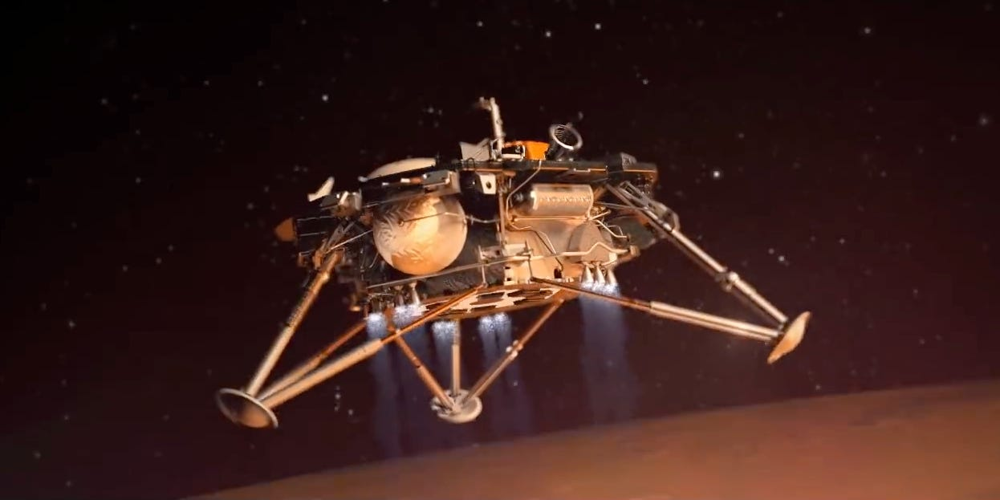Characteristics of the seismic signals can aid in enhancing the current models of the interior structure of Mars. As compared to Earth, Mars is a smaller planet which cooled more quickly than Earth, suggesting that it retained a lot of information about the early formation process in its layers. Not much is known about the planet deeper than a couple of kilometers into the crust.
The thickness of the crust is estimated to be between 30 and 100km which shows the large level of uncertainty (Knapmeyer-Endrun et al. 2020). Mars is postulated to also have a solid mantle, however it is expected to have more defined layers within due to a lack of convection. The elastic properties of these layers determine how seismic waves propagate through the interior of Mars, therefore seismic waves can be used as a tool to map these layers as well as draw inferences about early planetary formation processes (Knapmeyer-Endrun et al. 2020)(Lognonne et al. 2019).
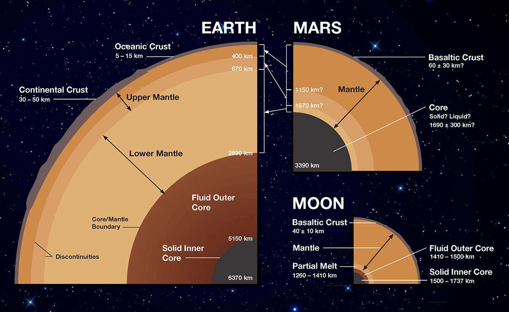This project will focus on analyzing low-frequency body waves which travel through the mantle and crust of the planet. Body waves include primary waves, or P-waves, which are longitudinal and secondary waves, or S-waves, which are transverse.
The P-waves cause motion in the direction of propagation and tracing that motion can be used to estimate the direction of the epicenter relative to the lander. S-waves propagate slower than P-waves and therefore the delay in arrival time at the seismometer can be used to estimate the epicentral distance. Looking at the relative amplitudes between the two waves can also provide clues about the type of marsquake that occurred. Since S-waves can only move through solids, they can be used to look at the characteristics of the interior of Mars by determining the depth of possible liquid components.
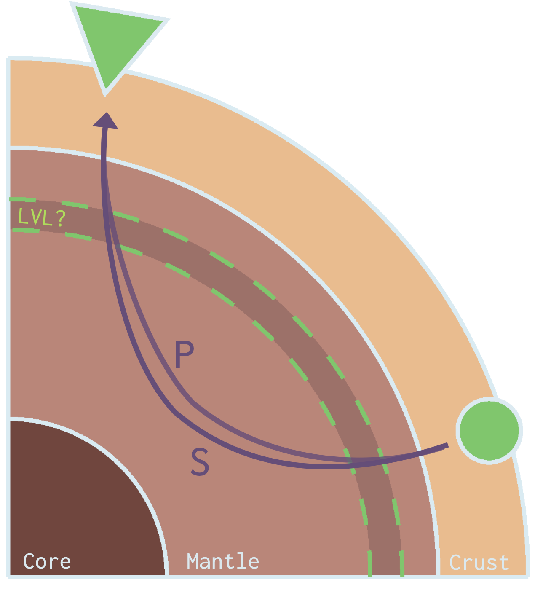The lander is located about 1600km west of the Cerberus Fossae region, which is hypothesized to be an active tectonic structure and a major contributor to Mars' seismicity based on evidence of faulting occurring in images taken from orbit before the mission (Banerdt et al. 2020)(Taylor et al. 2013). This region has already contributed two of the clearest signals collected by InSight thus far (Giardini et al. 2020).
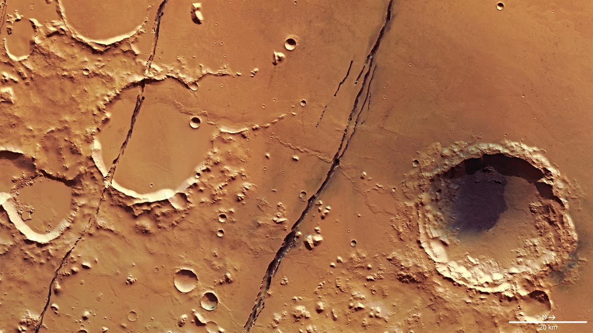METHODS & DATA
This project took advantage of the waveform data in Mars Seismic Catalog provided by the Insight Marsquake Service (MQS). It was downloaded directly from the Incorporated Research Institutions for Seismology (IRIS) database using a function of the python package ObsPy. The instrument of interest for this project is the very broad-band (VBB) seismometer, which is a part of the seismometer package, Seismic Experiment for Internal Structure (SEIS). The Insight mission successfully installed the geophysical observatory on 26 November 2019 and the data used for this analysis extends from 1 January 2019 to 31 March 2020 (InSight Marsquake Service). Each event was then categorized based on its signals' frequency content and those containing a possible seismic signal were tagged as candidates for further analysis. These tagged events were next filtered over different frequency ranges which helped us to look more closely at the wavetrains before performing a polarization analysis. In order to perform this analysis, the three data streams from the different components of the seismometer needed to be recombined using a specific equation pulled from (Suemoto et al. 2020).
Three new data streams were then extracted and used to plot the particle motion at the seismometer of the arriving P and S waves. These results were used to estimate the location of the origin event and hypothesize about the possible source mechanisms. Using our calculated difference in arrival time between the two waveforms, we estimated the distance to the epicenter using travel time plots published by the InSight mission team.
High Frequency Events
The subcategory of high frequency events were any event that contained signifigant energy above 2.4Hz. These events are hypothesized to excite waves stuck in the Martian crust and are therefore no useful for determining internal struce (Giardini et al. 2020). We choose to omit these, as well as the very high frequency (VHF) events from our analysis.
2.4Hz Resonance Events


TAGGED EVENT
These tagged events were next filtered over four different frequency ranges, 2-8Hz, 1-4Hz, 0.125-0.1Hz, and 0.03-0.125Hz which helped us to look more closely at the wavetrains before performing a polarization analysis. In order to perform this analysis, the three data streams from the different components of the seismometer needed to be recombined using a specific equation pulled from (Suemoto 2020).
After analyzing the candidates in different frequency spaces, we identified one event as likely having seismic origin in addition to our two previously stated references. The event, known as S0325a, occurred on 26 October 19 with the P-wave arriving at 06:58:58 UTC and the S-wave arriving at 07:02:56 UTC.
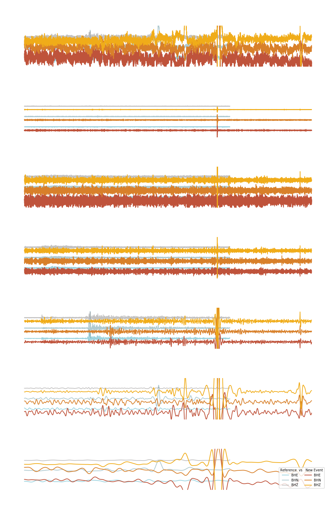RESULTS
After analyzing the candidates in different frequency spaces, we identified one event as likely having seismic origin in addition to our two previously stated references. The event, now known as S0325a, occurred on 26 October 19 with the P-wave arriving at 06:58:58 UTC and the S-wave arriving at 07:02:56 UTC. We estimated that the distance to the event was 38.5° based on the average distance given by 7 of the 13 available Martian models. The other 6 models could not produce the observed P and S waves and may have to be assigned lower probability of representing the interior structure of Mars. The polarization analysis of the particle motion also indicates a back azimuth of 123°, with the error coming from calculating the average noise level surrounding the event.
Click the event on the map below to learn more!
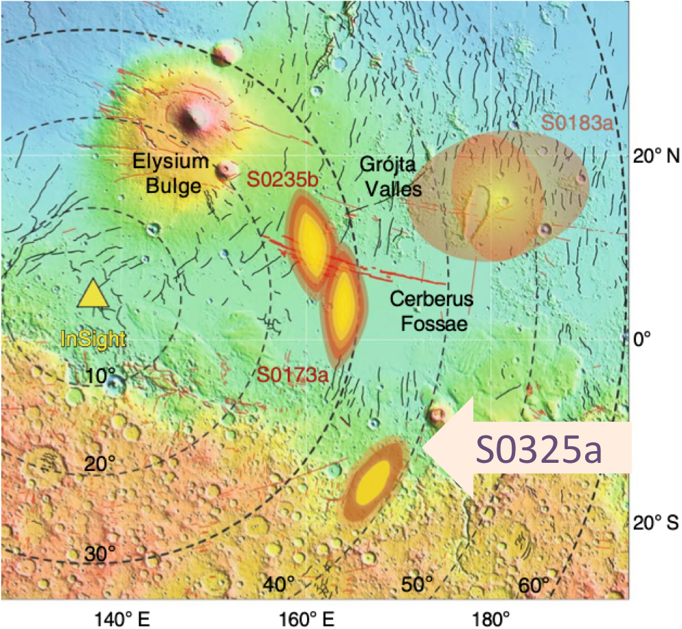S0235b
LOCATION
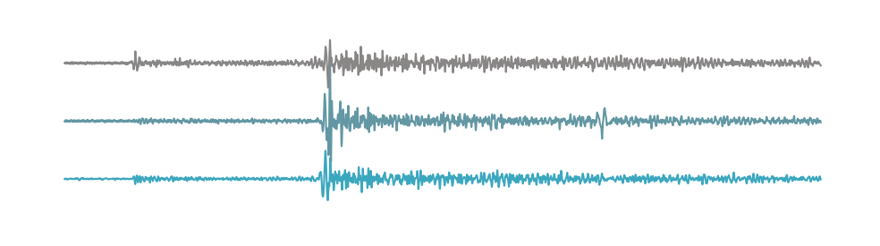We were able to determine that the difference in arrival time between the P and S wave was 2:46. This corresponed to an average distance of 27.3° over the 7 Martian models. Through a rough estimation of the particle motion at the seismometer during the P and S wave arrival, event was estimated to have an epicenter a couple of degress north of due east of the lander.Further polarization analysis confirmed that the calculated back azimuth of the marsquake was 72°.
SOURCE MECHANISM
Currently the source mechanism of this event is unknown. As it was confirmed that it originated from the Cerberus Fossae region it is likely due faulting.
S0173a
LOCATION
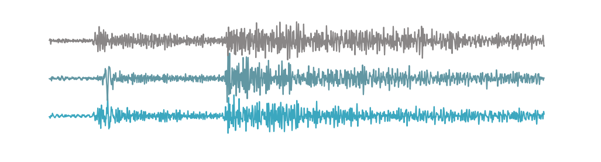We were able to determine that the difference in arrival time between the P and S wave was 2:54. This corresponed to an average distance of 28.7° over the 7 Martian models. Through a rough estimation of the particle motion at the seismometer during the P and S wave arrival, event was estimated to have an epicenter east of the lander. Further polarization analysis confirmed that the calculated back azimuth of the marsquake was 86°.
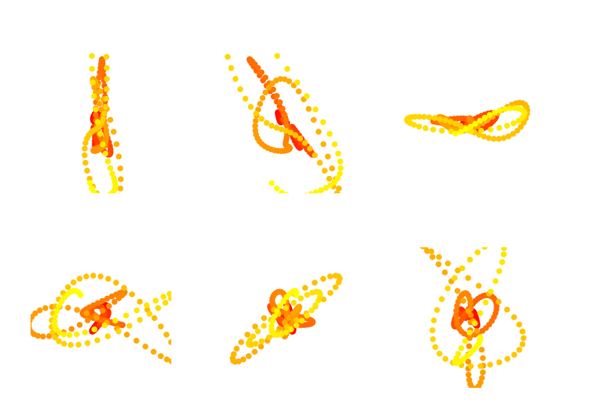SOURCE MECHANISM
Currently the source mechanism of this event is unknown. As it was confirmed that it originated from the Cerberus Fossae region it is likely due faulting.
S0325a
LOCATION
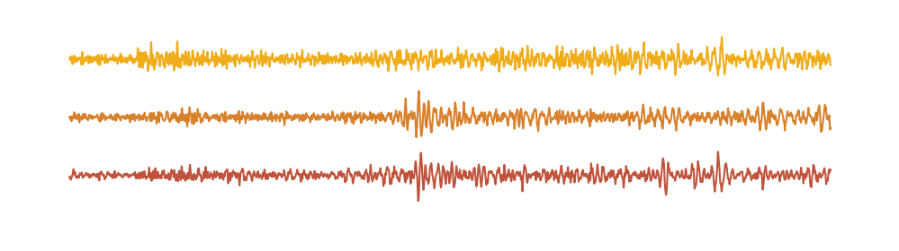We were able to determine that the difference in arrival time between the P and S wave was 3:58, which is about a minute longer than the two reference events. This corresponed to an average distance of 38.5° over the 7 Martian models. Through a rough estimation of the particle motion at the seismometer during the P and S wave arrival, event was estimated to have an epicenter south-east of the lander. Further polarization analysis confirmed that the calculated back azimuth of the marsquake was 123°.
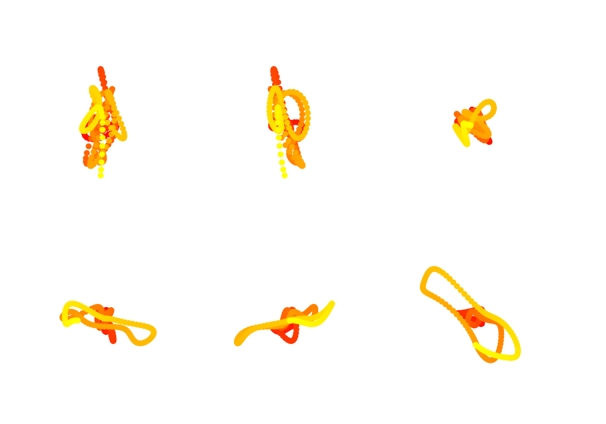SOURCE MECHANISM
Currently the source mechanism of this event is unknown. We can confirm however that it did not originate from the Cerberus Fossae region and is actually the first marsquake whose epicenter is
found in the Martian highlands at the time this website was created. This could lead to possibly different source mechanisms than S0173a or S0235b, but it is unlikely as this area of the Martian surface seems to show
similar signs of faulting as Cerberus Fossae from orbital images.